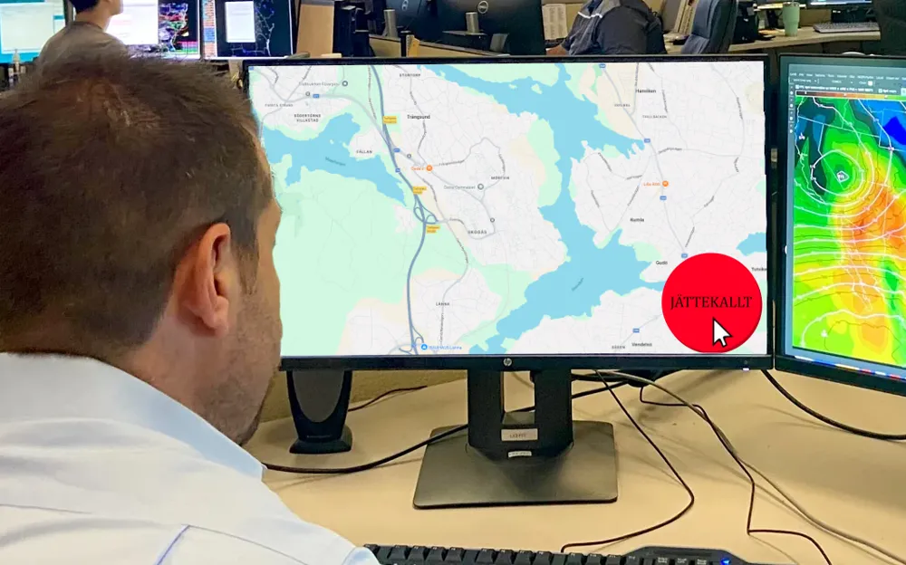

Östra gymnasiet

Därför är det så kallt i skolan
SMHI, som bestämmer vad det är för väder i Sverige, avslöjade i ett uttalande förra veckan varför det är så kallt i skolans lokaler. Det var tydligen en praktikant som råkat trycka på jättekallt-knappen för området runt Östra. Praktikanten ska sedan ha råkat låsa temperaturen på obestämd tid. "Vi ser väldigt allvarligt på det och har flera tekniker på plats som försöker lösa problemet", berättar Kristian Tempestas, sektionschef för Stockholm på SMHI, i en intervju med Löken. "Eftersom ingen egentligen vet hur väderdatorerna fungerar så kan det dröja ett tag", fortsätter han. Så fort misstaget upptäcktes togs praktikanten till baksidan där han avrättades genom arkebusering.
Skolledningen ser just nu över möjligheten att ställa ut flera dieselgeneratorer runt om skolan som spottar ur sig växthusgaser. Planen är att använda växthuseffekten för att på så sätt höja temperaturen i skolans lokaler. Metoden är redan beprövad på global skala, där den har gjort jorden flera grader varmare sedan metoden implementerades år 1900.